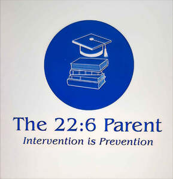

Trade Mark Journal No.2025/028 11 July 2025
UK00004221099 18 June 2025 (35,41,45)

- Class 35
- Presentation of goods and services; Demonstration of goods; Marketing the goods and services of others; Advertising services relating to the sale of goods; Promotion of goods and services for others; Procurement of contracts for the purchase and sale of goods and services; Career advisory services (other than education and training advice).
- Class 41
- Education; Vocational education; Education and training; Education and instruction; Education services; Education, teaching and training; Training and education services; Education and training services; Education and instruction services; Educational services for providing courses of education; Provision of education courses; Career counseling [education]; Provision of training and education; Provision of education and training; Education academy services for teaching languages; Entertainment, education and instruction services; Education information; Information (Education -); Education services relating to vocational training; Education and training consultancy; Legal education services; Online education services; Management of education services; Education services relating to health; Singing education; Education courses relating to automation; Career counselling relating to education and training; Education and training in the field of music and entertainment; Club education services; Vocational education relating to personal safety; Research in the field of education; Education and training in the field of occupational health and safety; Education information services; Guidance (Vocational -) [education or training advice]; Vocational guidance [education or training advice]; Career counselling [training and education advice]; Career advisory services (education or training advice); Organization of education competitions.
- Class 45
- Licensing services relating to the manufacture of goods.
Dionne Campbell-Mark
Veronica Nembhard